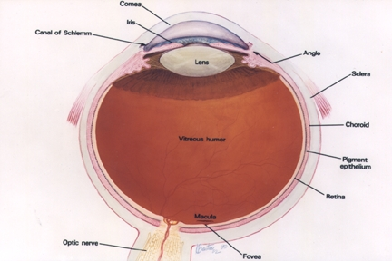

Identify the Eye Structures
The ability to see is dependent on the actions of several structures in and around the eyeball. See if you can identify the basic structures in the image below.
Activity not available on mobile devices (description)
How the Eye Functions
 When you look at an object, light rays are reflected from the object to the cornea. The light rays are bent, refracted and focused by the cornea, lens, and vitreous. The job of the lens is to make sure the rays come to a sharp focus on the retina. The resulting image on the retina is upside-down. Here at the retina, the light rays are converted to electrical impulses which are then transmitted through the optic nerve, to the brain, where the image is translated and perceived in an upright position!
The Eye as a Camera
Think of the eye as a camera. A camera needs a lens and a film to produce an image. In the same way, the eyeball needs a lens (cornea, crystalline lens, vitreous) to refract, or focus the light and a film (retina) on which to focus the rays. If any one or more of these components is not functioning correctly, the result is a poor picture. The retina represents the film in our camera. It captures the image and sends it to the brain to be developed. The macula is the highly sensitive area of the retina. The macula is responsible for our critical focusing vision. It is the part of the retina most used. We use our macula to read or to stare intently at an object.
Check Your Understanding
Activity not available on mobile devices (description)
Light passes through different parts of the eye in a certain order. Use the activity below to indicate this order.
Activity not available on mobile devices (description)
So you think you know the eye, put the pieces together in this jig saw puzzle.
Activity not available on mobile devices (description)
Did you Know?
Activity not available on mobile devices (description)